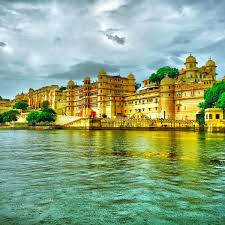
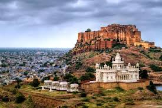
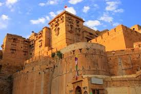
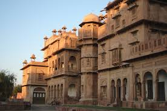
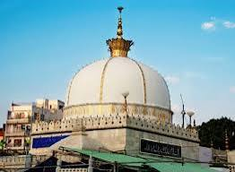
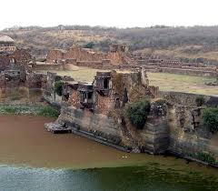
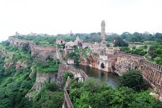
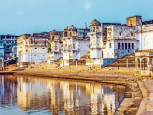
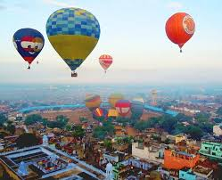

Hawa Mahal
Iconic palace with intricately latticed windows.

Iconic palace with intricately latticed windows.
Royal residence with museums showcasing artifacts and textiles.
Hilltop fort with elaborate palaces and courtyards.
UNESCO World Heritage Site with astronomical instruments.
Shopping hubs for textiles, jewelry, and handicrafts.

Lakeside royal palace with museums and panoramic views.
Artificial lake with boat rides and views of Jag Mandir and Lake Palace.
Island palace with gardens and marble structures.
Garden adorned with fountains and marble sculptures.

Massive fort with palaces, museums, and panoramic views of the city.
Marble cenotaph built in memory of Maharaja Jaswant Singh II.
Grand palace now partly a museum and luxury hotel.

Golden fort with intricate architecture and Jain temples.
Cluster of elaborately carved mansions.
Desert area with camel rides, cultural performances, and overnight camps.

Fort with palaces, temples, and a museum of armor and weapons.
Palace showcasing Rajput architecture and artifacts.
Temple known for its resident rats, considered sacred.
.jpg)
Sacred lake with ghats and temples, especially famous during the Pushkar Fair.
Temple dedicated to Lord Brahma, one of the few in the world.

Sufi shrine of Saint Moinuddin Chishti.
Artificial lake surrounded by gardens and pavilions.

Ancient fort within the national park.
Safari tours to spot tigers, leopards, and other wildlife.

Largest fort in India with historical significance.
Hill station with Dilwara Temples and Nakki Lake.

Annual fair with camel trading, cultural performances, and competitions.
Asia's largest literary festival held annually in Jaipur.

Balloon rides offering aerial views of forts and palaces.
Overnight camping in desert dunes with cultural performances.